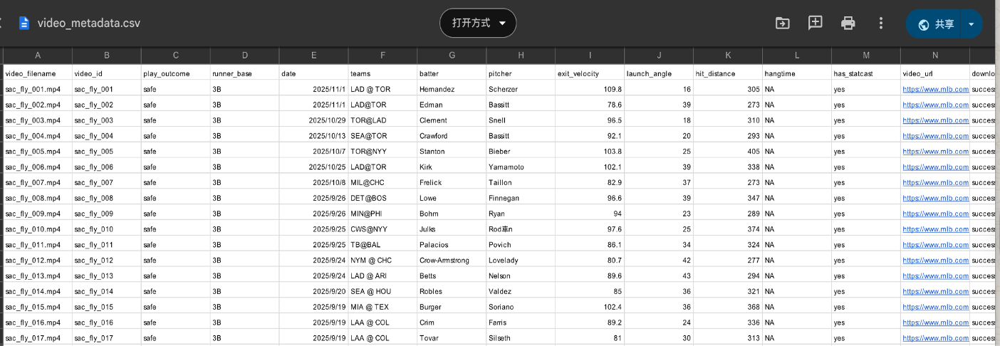
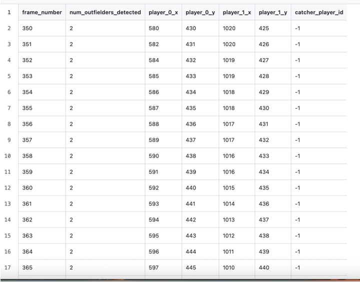
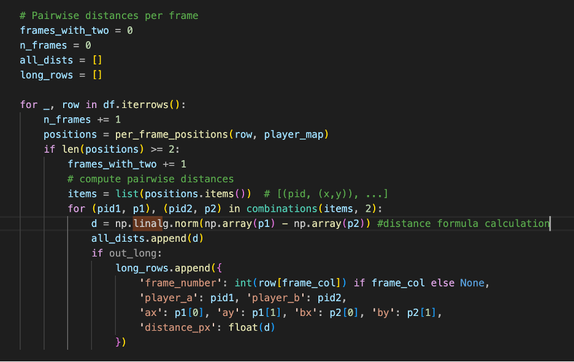
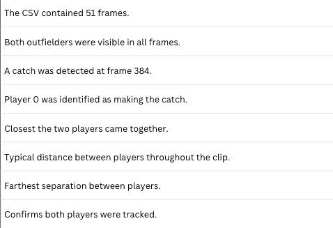

4 Week 3: Data Collection and Pipeline Integration
4.1 Overview
Week 3 focused on building a robust validation dataset and integrating all pipeline components into a cohesive system. The team collected real MLB sacrifice fly videos, validated tracking outputs, and connected computer vision to machine learning.
4.2 Project Pipeline
The complete workflow established this week:
Diego & Duoduo: Manual Data Collection
↓
Keaton: Player Tracking System (simple_tracker.py)
↓
Joshua: Player Detection + Validation (validator.py)
↓
Samuel: Model Integration & Testing4.3 Team Contributions
Diego Mendoza & Duoduo Cai: Manual Video Collection
Objective: Build validation dataset through systematic video collection
Tool Development: manual_download_helper.py


Results:
- ~25 videos collected from MLB Film Room
- Each video manually annotated with:
- Outcome (SAFE/OUT)
- Exit velocity
- Launch angle
- Hit distance
- Hang time
- Runner starting base
- Validation CSV created for downstream testing

Impact:
- Ground truth dataset for model validation
- Diverse play scenarios captured
- Quality-controlled annotations
- Foundation for accuracy testing
Keaton Ruthardt: Enhanced Player Tracking System
Objective: Robust outfielder tracking with catch detection
System Flow:
Video Input
↓
Detect Players & Ball (YOLOv8)
↓
Track Positions (Unique IDs)
↓
Identify Catcher (Distance-based)
↓
Export CSV FileKey Implementation:
The following code processes each frame and video, and exports the collected data generated from the functions into a CSV.
def process_frame(self, frame: np.ndarray, frame_number: int) -> Dict:
"""Process single frame."""
height, width = frame.shape[:2]
# Detect all people
all_detections = self.detect_players(frame)
# Filter to real outfielders only
outfielder_detections = self.filter_to_real_outfielders(
all_detections, (height, width)
)
# Track outfielders
tracked_players = self.tracker.update(outfielder_detections)
# Detect ball
ball_position = self.detect_ball(frame)
# Determine catcher
catcher_id = None
catcher_distance = None
if ball_position and len(tracked_players) > 0:
min_dist = float('inf')
closest_id = None
for player_id, player_data in tracked_players.items():
px, py = player_data['center']
bx, by = ball_position
distance = np.sqrt((px - bx)**2 + (py - by)**2)
if distance < min_dist:
min_dist = distance
closest_id = player_id
# Only count as catch if within 120 pixels
if min_dist < 120:
catcher_id = closest_id
catcher_distance = min_dist
self.prev_frame = frame.copy()
return {
'frame_number': frame_number,
'tracked_players': tracked_players,
'ball_position': ball_position,
'catcher_id': catcher_id,
'catcher_distance': catcher_distance
}
def process_video(
self,
video_path: str,
output_path: Optional[str] = None,
start_frame: int = 0,
end_frame: Optional[int] = None
) -> List[Dict]:
"""Process video and return results."""
cap = cv2.VideoCapture(video_path)
if not cap.isOpened():
raise ValueError(f"Cannot open video: {video_path}")
fps = int(cap.get(cv2.CAP_PROP_FPS))
width = int(cap.get(cv2.CAP_PROP_FRAME_WIDTH))
height = int(cap.get(cv2.CAP_PROP_FRAME_HEIGHT))
total_frames = int(cap.get(cv2.CAP_PROP_FRAME_COUNT))
logger.info(f"Video: {video_path}")
logger.info(f"Resolution: {width}x{height}, FPS: {fps}, Total frames: {total_frames}")
writer = None
if output_path:
fourcc = cv2.VideoWriter_fourcc(*'mp4v')
writer = cv2.VideoWriter(output_path, fourcc, fps, (width, height))
results = []
frame_idx = 0
if start_frame > 0:
cap.set(cv2.CAP_PROP_POS_FRAMES, start_frame)
frame_idx = start_frame
try:
while True:
ret, frame = cap.read()
if not ret:
break
if end_frame and frame_idx >= end_frame:
break
result = self.process_frame(frame, frame_idx)
results.append(result)
# Visualize
if writer:
vis = frame.copy()
# Draw tracked players
for player_id, player_data in result['tracked_players'].items():
x1, y1, x2, y2 = player_data['bbox']
cx, cy = player_data['center']
color = (0, 255, 0) # Green
if result['catcher_id'] == player_id:
color = (0, 255, 255) # Yellow for catcher
cv2.rectangle(vis, (x1, y1), (x2, y2), color, 2)
cv2.putText(vis, f"Player {player_id}", (x1, y1-10),
cv2.FONT_HERSHEY_SIMPLEX, 0.6, color, 2)
cv2.circle(vis, (cx, cy), 5, color, -1)
# Draw ball
if result['ball_position']:
bx, by = result['ball_position']
cv2.circle(vis, (bx, by), 10, (0, 255, 255), 3)
# Draw catch event
if result['catcher_id'] is not None:
cv2.putText(vis, f"CATCH by Player {result['catcher_id']}",
(10, vis.shape[0] - 20),
cv2.FONT_HERSHEY_SIMPLEX, 1.0, (0, 255, 255), 3)
writer.write(vis)
if frame_idx % 30 == 0:
logger.info(f"Frame {frame_idx}: {len(result['tracked_players'])} players tracked")
frame_idx += 1
finally:
cap.release()
if writer:
writer.release()
logger.info(f"Saved: {output_path}")
logger.info(f"Processed {len(results)} frames")
return results
def export_simple_csv(self, results: List[Dict], output_csv: str):
"""
Export SIMPLE CSV with just:
- Frame number
- Outfielder positions (x, y for each player)
- Who caught the ball
"""
import pandas as pd
rows = []
for r in results:
row = {
'frame_number': r['frame_number'],
'num_outfielders_detected': len(r['tracked_players']),
}
# Add each tracked player's position
player_ids = sorted(r['tracked_players'].keys())
for player_id in player_ids:
player_data = r['tracked_players'][player_id]
row[f'player_{player_id}_x'] = player_data['center'][0]
row[f'player_{player_id}_y'] = player_data['center'][1]
# Catch info - who caught the ball
row['catcher_player_id'] = r['catcher_id'] if r['catcher_id'] is not None else -1
rows.append(row)
df = pd.DataFrame(rows)
# Fill NaN with empty for player positions that don't exist
df = df.fillna('')
df.to_csv(output_csv, index=False)
logger.info(f"Exported to: {output_csv}")
# Summary
players_tracked = set()
for r in results:
players_tracked.update(r['tracked_players'].keys())
logger.info(f"Total unique players tracked: {len(players_tracked)}")
logger.info(f"Player IDs: {sorted(players_tracked)}")
return df
if __name__ == "__main__":
print("Simple Outfielder Tracker loaded")CSV Output Structure:
| Column | Description |
|---|---|
frame_number |
Frame index in video |
num_outfielders_detected |
Count of detected players (0-3) |
player_0_x, player_0_y |
Pixel coordinates of player 0 |
player_1_x, player_1_y |
Pixel coordinates of player 1 |
player_2_x, player_2_y |
Pixel coordinates of player 2 |
catcher_player_id |
ID of player who caught ball (-1 if none) |

Features:
- Unique Player IDs: Consistent tracking across frames
- Catch Detection: Distance threshold (120 px) for ball-player proximity
- Multi-Player Support: Handles 0-3 outfielders per frame
- Coordinate Export: Pixel positions for all detected players
Joshua Cano: Validation Script
Objective: Verify tracking CSV data quality before model input
Overview
This week’s task focused on verifying that our video-processing pipeline correctly outputs the essential features our model needs:
- Fielder positions (x, y pixel coordinates)
- Detection of a catch event
- Measurement of distance between multiple outfielders
To do this, we created a Python script called validator.py. This script automatically analyzes any CSV file produced by Keaton’s tracker (for example, simple_output.csv or Two Outfielder.csv) and reports whether these three key elements are present and functioning.
1. Player detection:
It looks for all columns named in the format player_{id}x and player{id}_y. These indicate that one or more players were successfully tracked in each video frame.

2. Catch detection:
It checks the column catcher_player_id. If the value is 0 or greater in any frame, it means a catch was detected and identifies which player caught the ball

3. Distance measurement:
For frames containing two or more players, it calculates the distance between every pair of players using the Euclidean distance formula:

The script then produces two output files:
- validation_report.csv – A concise summary for each video file analyzed.

Column Explanation

- validation_report_pairwise.csv – An optional detailed file listing per-frame distances between players (used for debugging and visualization).
A snippet from the detailed per-frame distance file shows:
- player_a = 0 and player_b = 1 identify the two tracked fielders.
- The ax, ay, bx, by columns are their pixel coordinates in that frame.
- distance_px is calculated using the Euclidean formula, giving the exact pixel separation between them.

Quality Assurance:
- Ensures player coordinate columns exist
- Verifies catch detection data present
- Calculates inter-player distances
- Flags missing or invalid data
- Prevents bad data from reaching model
Claude AI was used to help build this validator script, specifically for helping process Keaton’s CSV inputs.
Samuel Bulnes: Enhanced Model Integration
Objective: Integrate full tracking CSV with ML model
Model Pipeline:


Key Functions:
load_data(): Automatically loads updated CSVspreprocess_data(): Merges tracking features with runner features- Fully compatible with Joshua’s validated datasets
Engineering Features:
From tracking CSV, the model now computes: - Player spacing (distance between outfielders) - Movement dynamics (velocity, direction) - Positional alignment at catch time - Field coverage metrics
Results:
- ✅ Training data: Loaded successfully
- ✅ Test data: Loaded successfully
- ✅ Position tracking: Loaded successfully
- ✅ Feature engineering: 9 features generated
- ✅ Pipeline: Complete data-to-model flow achieved

4.4 Technical Achievements
1. Validation Dataset
- 25 manually annotated videos
- Ground truth labels (SAFE/OUT)
- Statcast metadata captured
- Quality-controlled collection process
2. Tracking System
- YOLOv8-based detection
- Multi-player tracking with IDs
- Automatic catch detection
- Structured CSV exports
3. Data Validation
- Automated quality checks
- Distance calculations
- Missing data detection
- Pre-model validation
4. Model Integration
- Full tracking CSV ingestion
- Feature engineering automation
- Seamless data flow
- 9 engineered features
4.5 Challenges & Solutions
Challenge 1: Manual Annotation Efficiency
Problem: Annotating 25 videos is time-consuming Solution: Built interactive helper script with keyboard shortcuts
Challenge 2: Tracking Consistency
Problem: Player IDs change across frames Solution: Implemented IoU-based ID persistence
Challenge 3: Data Quality Variance
Problem: Some videos produce incomplete tracking Solution: Built validator to flag issues before model input
Challenge 4: Feature Compatibility
Problem: Tracking features don’t match model expectations Solution: Automated preprocessing to merge and transform features
4.6 Lessons Learned
- Manual annotation is valuable: Human verification ensures quality
- Validation is critical: Catches errors before they reach the model
- ID persistence matters: Consistent tracking improves features
4.7 Next Steps (Week 4)
- Build complete end-to-end pipeline script
- Optimize performance (CPU vs GPU)
- Improve model robustness
- Run system evaluation on full dataset
- Design video overlay system
Week 3 connected vision to prediction, creating a validated data pipeline from video to model output.